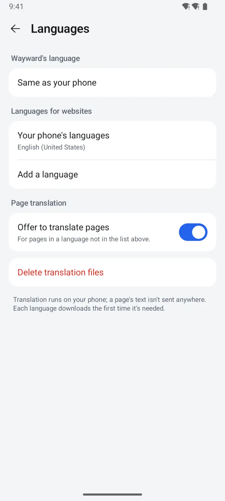
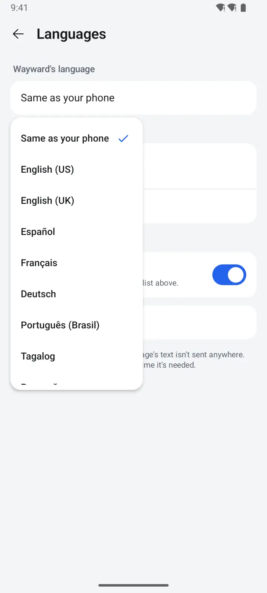
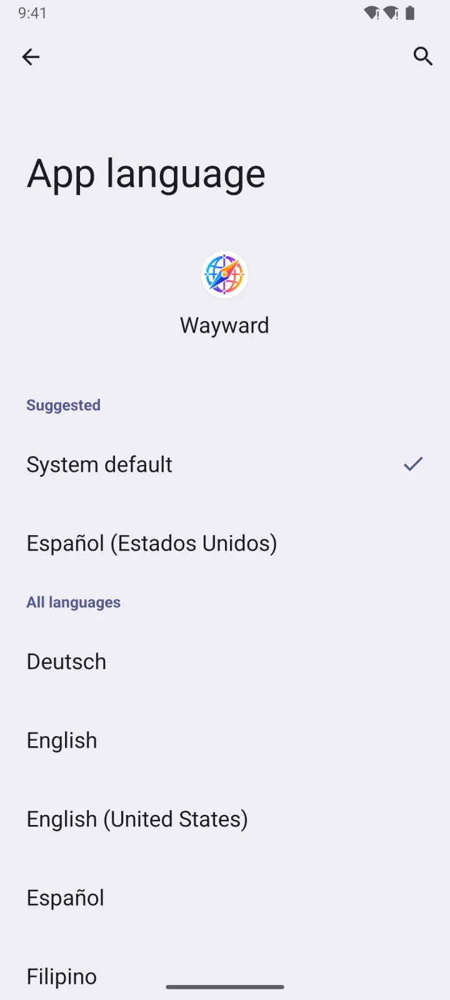
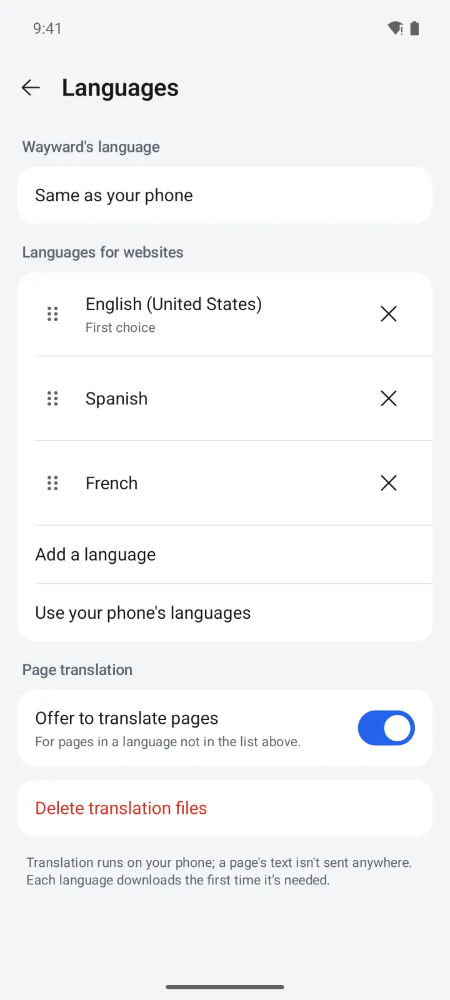

Change Wayward's language, and the languages sites see
How-to
Choose a language for Wayward, tell sites which languages you read and decide when Wayward should offer a translation.
Open the ⋮ menu and tap Settings > Languages. The Settings row shows Wayward's language.

Wayward's language
Wayward's language sets the language of Wayward's menus, buttons and messages. Tap it and pick one:
Same as your phone, English (US), English (UK), Español, Français, Deutsch, Português (Brasil), Tagalog, Русский, العربية, हिन्दी, 日本語, 한국어 or 简体中文.
On Android 13 and later Wayward switches immediately. On older phones the screen starts over in the new language. In Arabic, Wayward is laid out right to left.

On Android 13 and later you can also set it from your phone: in your phone's Settings, open Apps, then Wayward, then Language.

This doesn't change websites, and the help on this site is in English.
Languages for websites
Websites use this list to pick which language to show you. As Wayward comes, sites get Your phone's languages, the ones set in your phone.
To give sites your own list:
- Tap Add a language and pick one. Your phone's languages are added with it, so you start from them.
- The top language is your First choice. To move a language, hold the six dots at the start of its row and drag it up or down (with TalkBack, each row has actions to move it one place, such as Move German up). Its X removes it.
- Use your phone's languages drops your list and goes back to the phone's.

If Ask sites for English is on (in Settings > Shields & Privacy, under Advanced), sites only see English, whatever this list says. A note here tells you so.
Page translation
Wayward can translate a page on your phone; the page's text isn't sent anywhere.
- Offer to translate pages: on a page in a language that isn't in your list above, a bar under the page offers to translate it. Turn this off if you don't want the offer. You can still translate any page with Translate in the menu.
- Always translate: languages Wayward translates without asking. You add one from the offer bar's three dots; tap Remove here to stop.
- Never translate: languages and sites Wayward never offers to translate. Tap Remove next to one to get the offer again.
- Delete translation files: each language downloads once, the first time you translate it, and stays on your phone. This deletes them all to free space; they download again when needed. Wayward asks first, then says Translation files deleted.
The two lists only show once they have something in them.
For translating a page step by step, see Translate a page.